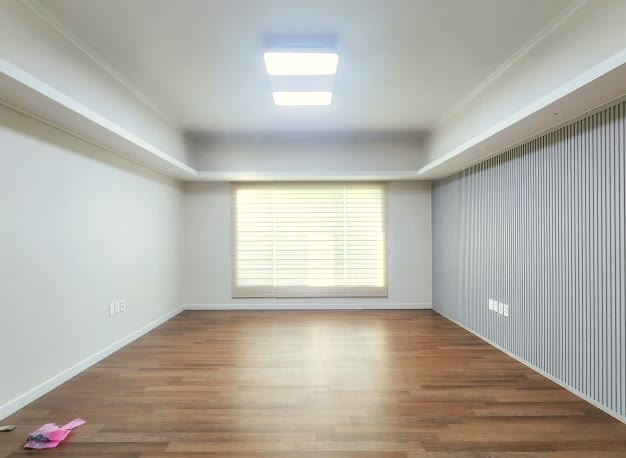
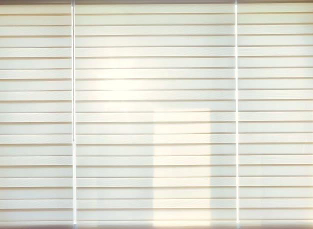
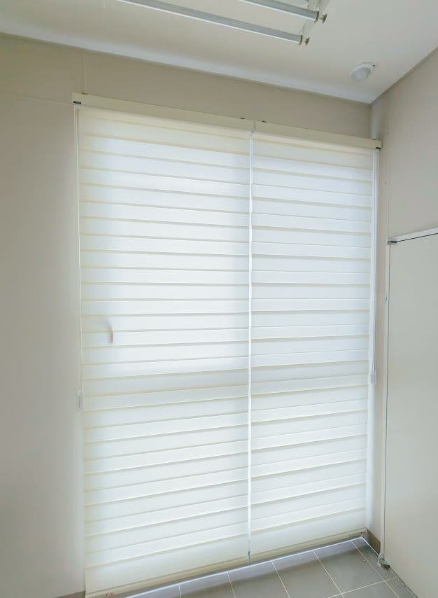
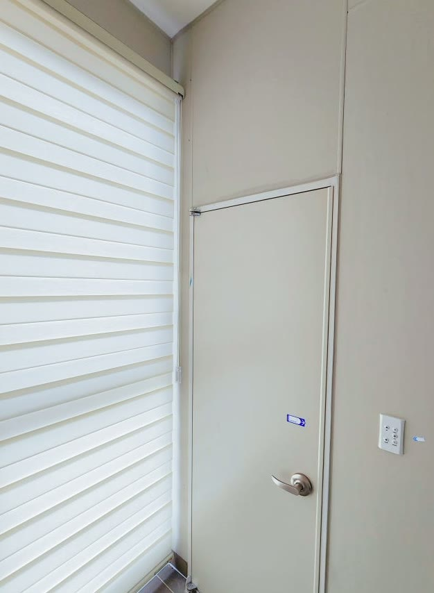

2026년 7월 1일 시공
경주 황성동 빌라
콤비블라인드 시공후기

경주 황성동 빌라에 다녀왔습니다.
입주 전 빈집일 때 미리 블라인드를 달아두고 싶다고 연락 주신 곳이었습니다.
이사는 짐이 들어가는 순간부터 정신이 없어서, 커튼이나 블라인드는 늘 뒷전으로 밀리기 쉽습니다.
그래서 한동안 휑한 창으로 지내게 되는 경우가 많은데, 이 댁은 반대로 하셨습니다.
짐이 들어오기 전, 빈집일 때 콤비블라인드를 먼저 세팅해 두기로 하신 거죠.
빈집일 때 미리 하면 시공이 깔끔합니다
짐이 없는 빈집은 실측도 시공도 훨씬 수월합니다.
가구를 옮길 필요가 없고 먼지 걱정도 없어서, 마감 라인이 반듯하게 떨어집니다.
무엇보다 입주 첫날부터 눈부심도 바깥 시선도 정리된 상태에서 시작할 수 있습니다.
짐을 들이고 나면 창가에 손대기가 오히려 번거로워지는데, 빈집 때 끝내두면 그 수고가 없습니다.
일정만 맞으면 빈집 세팅은 가장 깔끔하게 끝나는 시공입니다.

콤비블라인드로 채광을 조절합니다
이 댁은 방마다 콤비블라인드로 통일했습니다.
콤비블라인드는 비치는 원단과 빛을 막아주는 불투명 원단이 가로로 번갈아 배치된 구조입니다.
두 원단을 나란히 겹치면 은은하게 빛이 들어오고, 각도를 살짝 어긋내면 들어오는 빛의 양을 조절할 수 있습니다.
완전히 겹쳐 내리면 불투명 원단끼리 맞물려 바깥 시선을 확실히 가려 줍니다.
낮에는 은은하게 빛을 들이고, 눈부실 때는 딱 가리는 식으로 줄 하나로 조절됩니다.

거실은 베이지, 나머지는 아이보리로
색은 거실을 베이지로, 나머지 방을 아이보리로 잡았습니다.
베이지는 어떤 가구가 들어와도 무난하게 어우러져서, 앞으로 어떻게 꾸미셔도 받쳐 줍니다.
거실과 나머지 공간의 톤을 한 계열로 맞추니, 빈집인데도 벌써 정돈된 느낌이 납니다.
색이 튀지 않아 집 전체가 차분하게 통일됐습니다.
거실만 살짝 톤을 달리 두면 공간이 단조롭지 않으면서도, 전체 흐름은 하나로 이어집니다.

세로로 긴 창은 재단이 중요합니다
안방 베란다와 다용도실 창은 세로로 길쭉한 형태였습니다.
이런 창은 폭과 길이를 창에 딱 맞춰 재단하는 게 특히 중요합니다.
조금만 짧거나 길어도 라인이 어색해지기 때문입니다.
창 크기에 맞게 정확히 떨어지도록 재단하니, 긴 창이 오히려 시원하고 단정해 보입니다.

관리도 어렵지 않습니다
콤비블라인드는 평소 마른 먼지떨이로 가볍게 털어주면 됩니다.
얼룩이 생기면 물티슈로 살살 닦아내도 되고, 원단이 튼튼해서 오래 써도 잘 상하지 않습니다.
손이 많이 가지 않아 오래 쓰기 좋은 제품입니다.
빈집에 미리 달아두면 입주 뒤 청소할 일도 그만큼 줄어듭니다.
낡은 창을 정리하고 콤비블라인드로 새로 다니, 빈집이 어느새 이사만 오면 되는 상태가 됐습니다.
이사 전 빈집 세팅은 일정만 맞으면 가장 깔끔하게 끝나니, 시기를 고민 중이시면 편하게 문의 주세요.
경주를 포함한 대구·경북·부산·울산·경남 전 지역 찾아갑니다.